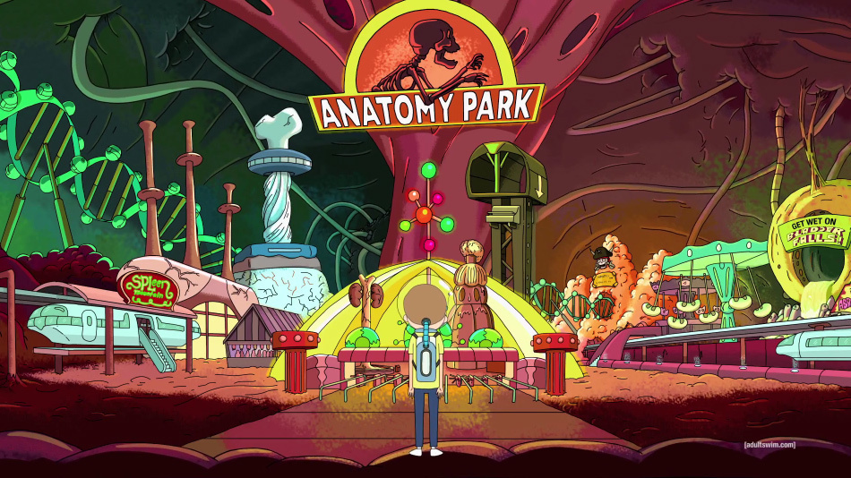
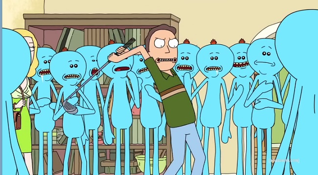

Rick Sanchez

Rick Sanchez is the co-eponymous main character
and leading protagonist of the show. He is a
genius scientist whose alcoholism and reckless,
nihilistic behavior are a source of concern for his
daughter's family, as well as the safety of their son, Morty. He is voiced by Justin Roiland.
Morty Smith

Morty is possibly the stabilizing influence in Rick's
life that keep Rick from doing things that could end
up doing a lot of harm though this does not work on many
occasions. When Rick messes up, Morty is the one who
convinces him to fix things.
Though Morty often frustrates him, Rick seems to get
very upset at the idea of not being able to have
adventures with Morty.
Summer Smith

Morty's older sister, a more conventional teenager
who values her image and constant access to cell phones.
Jerry Smith

Morty's insecure father, who strongly disapproves of Rick's
influence over his son. His marriage is jeopardized by Jerry's
poor relationship with father-in-law Rick. Jerry works at a
low-level advertising agency.
Beth Smith

Morty's mother, Rick's daughter, and a cardiac surgeon on
horses. Level-headed and assertive, she struggles with her
husband over his ego, which thrives in defiance of his
proven mediocrity.
Watch Now!
Episode 1
|
|
Episode 2
|
|
Episode 3
|

|
Episode 4
|
|
Episode 5
|

|